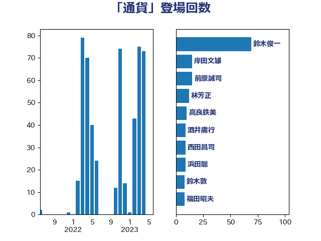

単語「通貨」

| 鈴木俊一 | 自由民主党 | 69 回 |
| 岸田文雄 | 自由民主党 | 15 回 |
| 前原誠司 | 国民民主党 | 15 回 |
| 林芳正 | 自由民主党 | 12 回 |
| 高良鉄美 | 無所属 | 10 回 |
| 酒井庸行 | 自由民主党 | 9 回 |
| 西田昌司 | 自由民主党 | 9 回 |
| 浜田聡 | NHK党 | 9 回 |
| 鈴木敦 | 国民民主党 | 8 回 |
| 福田昭夫 | 立憲民主党 | 8 回 |
| 宗清皇一 | 自由民主党 | 8 回 |
| 塚田一郎 | 自由民主党 | 8 回 |
| 田村貴昭 | 日本共産党 | 7 回 |
| 浅田均 | 日本維新の会 | 7 回 |
| 音喜多駿 | 日本維新の会 | 6 回 |
| 舩後靖彦 | れいわ新選組 | 6 回 |
| 岡本三成 | 公明党 | 6 回 |
| 小田原潔 | 自由民主党 | 6 回 |
| 福島伸享 | 無所属 | 5 回 |
| 櫻井周 | 立憲民主党 | 5 回 |
| 中川宏昌 | 公明党 | 4 回 |
| 階猛 | 立憲民主党 | 3 回 |
| 西田実仁 | 公明党 | 3 回 |
| 藤巻健太 | 日本維新の会 | 3 回 |
| 細田博之 | 自由民主党 | 3 回 |
| 神谷宗幣 | 参政党 | 3 回 |
| 神田潤一 | 自由民主党 | 3 回 |
| 盛山正仁 | 自由民主党 | 3 回 |
| 熊谷裕人 | 立憲民主党 | 3 回 |
| 浅川義治 | 日本維新の会 | 3 回 |
| 山田太郎 | 自由民主党 | 3 回 |
| 山本博司 | 公明党 | 3 回 |
| 大塚耕平 | 国民民主党 | 3 回 |
| 住吉寛紀 | 日本維新の会 | 3 回 |
| 青柳陽一郎 | 立憲民主党 | 2 回 |
| 阿部司 | 日本維新の会 | 2 回 |
| 野田佳彦 | 立憲民主党 | 2 回 |
| 藤原崇 | 自由民主党 | 2 回 |
| 落合貴之 | 立憲民主党 | 2 回 |
| 緑川貴士 | 立憲民主党 | 2 回 |
| 浜田靖一 | 自由民主党 | 2 回 |
| 横沢高徳 | 立憲民主党 | 2 回 |
| 柴愼一 | 立憲民主党 | 2 回 |
| 徳永久志 | 立憲民主党 | 2 回 |
| 後藤茂之 | 自由民主党 | 2 回 |
| 平沼正二郎 | 自由民主党 | 2 回 |
| 平将明 | 自由民主党 | 2 回 |
| 岬麻紀 | 日本維新の会 | 2 回 |
| 尾辻秀久 | 無所属 | 2 回 |
| 和田有一朗 | 日本維新の会 | 2 回 |
| 勝部賢志 | 立憲民主党 | 2 回 |
| 伊東信久 | 日本維新の会 | 2 回 |
| 高村正大 | 自由民主党 | 1 回 |
| 金子恭之 | 自由民主党 | 1 回 |
| 道下大樹 | 立憲民主党 | 1 回 |
| 近藤和也 | 立憲民主党 | 1 回 |
| 豊田俊郎 | 自由民主党 | 1 回 |
| 谷合正明 | 公明党 | 1 回 |
| 西村明宏 | 自由民主党 | 1 回 |
| 西村康稔 | 自由民主党 | 1 回 |
| 藤岡隆雄 | 立憲民主党 | 1 回 |
| 羽田次郎 | 立憲民主党 | 1 回 |
| 篠原豪 | 立憲民主党 | 1 回 |
| 稲津久 | 公明党 | 1 回 |
| 石井章 | 日本維新の会 | 1 回 |
| 石井正弘 | 自由民主党 | 1 回 |
| 田嶋要 | 立憲民主党 | 1 回 |
| 田島麻衣子 | 立憲民主党 | 1 回 |
| 田中健 | 国民民主党 | 1 回 |
| 沢田良 | 日本維新の会 | 1 回 |
| 江田憲司 | 立憲民主党 | 1 回 |
| 枝野幸男 | 立憲民主党 | 1 回 |
| 杉本和巳 | 日本維新の会 | 1 回 |
| 杉尾秀哉 | 立憲民主党 | 1 回 |
| 杉久武 | 公明党 | 1 回 |
| 末松義規 | 立憲民主党 | 1 回 |
| 平林晃 | 公明党 | 1 回 |
| 川田龍平 | 立憲民主党 | 1 回 |
| 岩渕友 | 日本共産党 | 1 回 |
| 山本太郎 | れいわ新選組 | 1 回 |
| 山崎正恭 | 公明党 | 1 回 |
| 小野田紀美 | 自由民主党 | 1 回 |
| 小山展弘 | 立憲民主党 | 1 回 |
| 守島正 | 日本維新の会 | 1 回 |
| 大西健介 | 立憲民主党 | 1 回 |
| 大石あきこ | れいわ新選組 | 1 回 |
| 堀場幸子 | 日本維新の会 | 1 回 |
| 吉良よし子 | 日本共産党 | 1 回 |
| 古賀之士 | 立憲民主党 | 1 回 |
| 原口一博 | 立憲民主党 | 1 回 |
| 伊藤渉 | 公明党 | 1 回 |
| 井坂信彦 | 立憲民主党 | 1 回 |
| 中西祐介 | 自由民主党 | 1 回 |
| 中川正春 | 立憲民主党 | 1 回 |
| 中山展宏 | 自由民主党 | 1 回 |